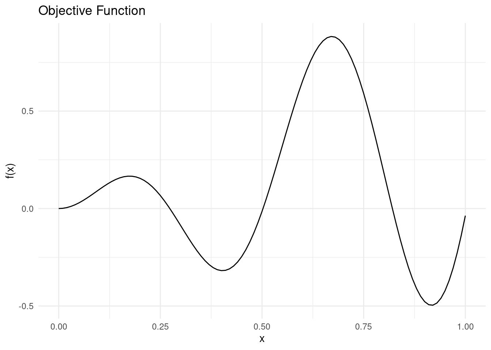
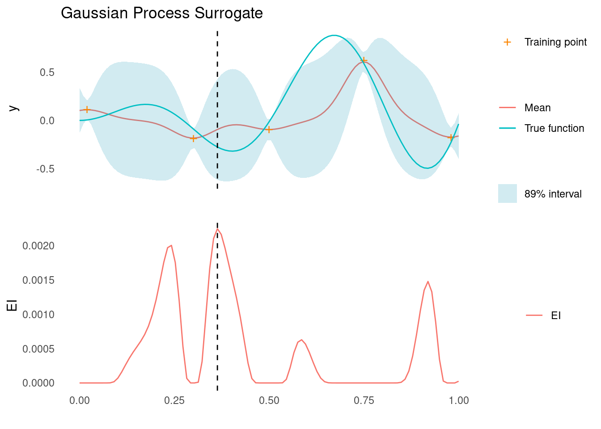
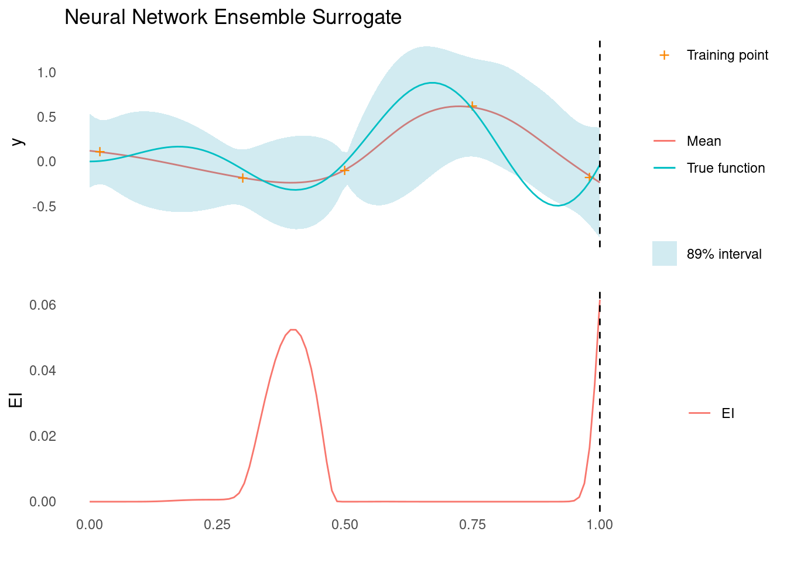
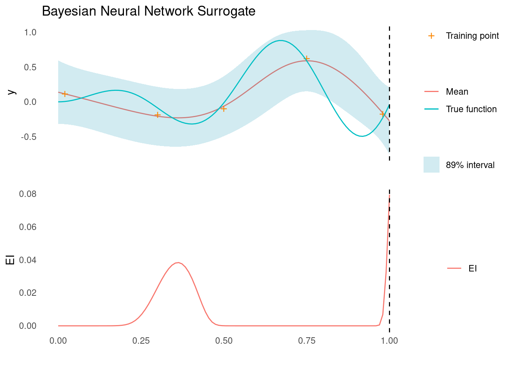
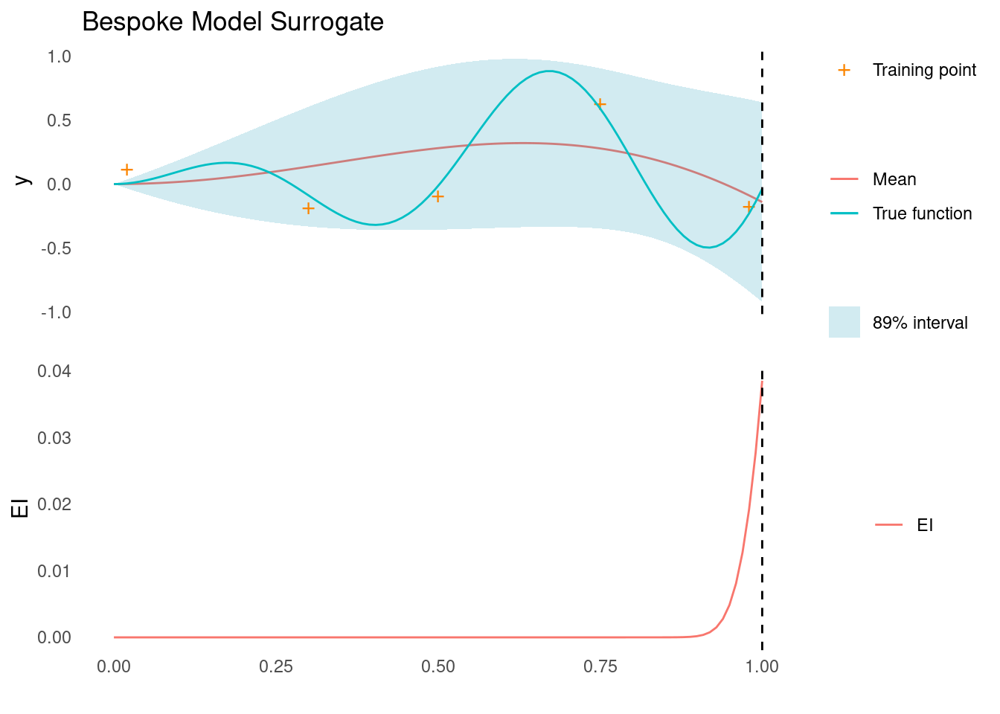
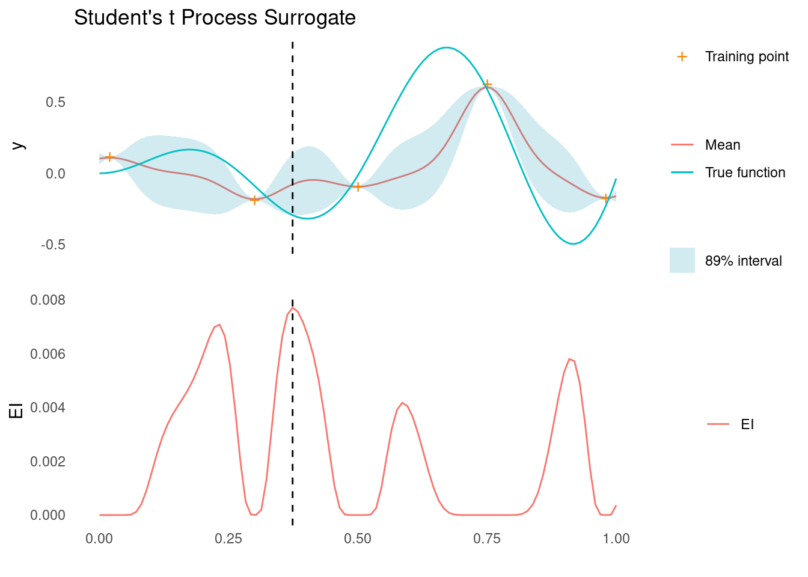
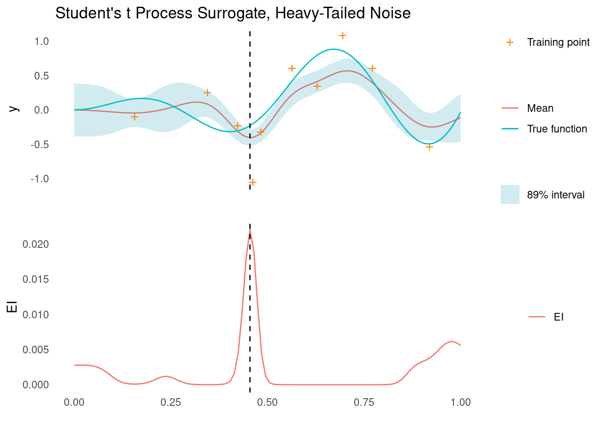

Alternative Surrogate Models for Bayesian Optimisation
Bayesian optimisation is a powerful optimisation technique for black-box functions and processes with expensive evaluations. It is popular for hyperparameter tuning in machine learning, but has many real-world applications as well.
One of the key components of Bayesian optimisation is the surrogate model, which models the objective function and helps guide optimisation by being a cheap to evaluate representation of our posterior beliefs. Gaussian processes (GPs) are commonly used as surrogate functions, as they offer many of the qualities we need, when doing Bayesian optimisation. However, there are alternatives to GPs and, in this post, we will dive into the role of surrogate models in Bayesian optimisation, focusing on four types of surrogate models that are not GPs.
Specifically, we will discuss ensembles, Bayesian Neural Networks, bespoke Bayesian models, and Student’s t processes as potential surrogate models for Bayesian optimisation. Along with the discussion, are implementations in R.
library(ggplot2)
library(magrittr)
seed <- 4444
set.seed(seed)Surrogate Models in Bayesian Optimisation
In Bayesian optimisation, we are conducting experiments on an objective function or process, \(f\), that is very expensive to evaluate. The objective function is evaluated on a search space, \(\mathcal{X}\), one point, \(\mathbf{x} \in \mathcal{X}\), at a time and we are looking for the point, \(\mathbf{x}^+\) , that optimises the objective function. We do this in a sequential manner, where we consider the next point, \(\mathbf{x}_{t+1}\), given the knowledge from all previously sampled points. To help decide on the next point, we employ an acquisition function, \(a(\mathbf{x})\), that should be easy to optimise on the search space:
\[\mathbf{x}_{t+1} = \arg\max_{\mathbf{x} \in \mathcal{X}} a(\mathbf{x})\]
The acquisition function is itself a function of the surrogate model. The surrogate is a regression model that is used to approximate the objective function and it provides predictions of the objective function values and uncertainty estimates at unobserved points in the search space.
Specifically, many acquisition functions are functions of the mean \(\mu(\mathbf{x})\) and standard deviation \(\sigma(\mathbf{x})\) across the search space. The surrogate model should provide estimates of those two. In this definition is also the implicit assumption that the likelihood of the surrogate model is Gaussian.
Gaussian processes, are often used as surrogate models because they explicitly satisfy this assumption. With a Gaussian process, it is easy to isolate the two necessary components. \(\mu(\mathbf{x})\) is simply the posterior predictive mean function and \(\sigma(\mathbf{x})\) is an entry on the diagonal in the covariance matrix of the posterior predictive distribution.
There are, however, alternatives to Gaussian processes as surrogates and four of them are discussed below. While there are acquisition functions that rely on more complex mechanisms, this post focuses on surrogate models that support acquisition functions which are in some way a function of \(\mu(\mathbf{x})\) and \(\sigma(\mathbf{x})\). The first three also assume a Gaussian likelihood, whereas the last surrogate discussed, Student’s t processes, assumes a Student’s t likelihood and consequently requires a modification to the acquisition function.
An Example Problem
To demonstrate the surrogate models, we need a toy problem. We will use a simple objective function with noise and a single dimension.
objective_function <- function(x) sin(12 * x) * x + 0.5 * x^2We assume that we want to minimise this function. There are two minima in the search space \(\mathcal{X} = [0,1]\), so it will not be too easy to minimise.
Show the code
ggplot() +
geom_function(fun = objective_function) +
xlim(c(0, 1)) +
theme_minimal() +
labs(x = "x", y = "f(x)", title = "Objective Function")
We will approximate the the objective function with different surrogate models.
Each surrogate model will receive the same five training points. For evaluating the acquisition function, we use a prediction grid to approximate the search space.
X_train <- matrix(c(0.02, 0.3, 0.5, 0.75, 0.98), 5, 1)
noise <- 0.05
y_train <- objective_function(X_train) + rnorm(5, 0, noise)
X_pred <- matrix(seq(0, 1, length.out = 100), 100, 1)For reference, here is a Gaussian process conditioned on the five training points along with the Expected Improvement (EI) acquisition function evaluated across search space.
Show the code
#' RBF Kernel
#'
#' @param X1 matrix of dimensions (n, d). Vectors are coerced to (1, d).
#' @param X2 matrix of dimensions (m, d). Vectors are coerced to (1, d).
#' @param l length scale
#' @param sigma_f scale parameter
#'
#' @return matrix of dimensions (n, m)
rbf_kernel <- function(X1, X2, l = 1.0, sigma_f = 1.0) {
if (is.null(dim(X1))) dim(X1) <- c(1, length(X1))
if (is.null(dim(X2))) dim(X2) <- c(1, length(X2))
sqdist <- (- 2*(X1 %*% t(X2))) %>%
add(rowSums(X1**2, dims = 1)) %>%
sweep(2, rowSums(X2**2, dims = 1), `+`)
sigma_f**2 * exp(-0.5 / l**2 * sqdist)
}
#' Get Parameters of the Posterior Gaussian Process
#'
#' @param kernel kernel function used for the Gaussian process
#' @param X_pred matrix (m, d) of prediction points
#' @param X_train matrix (n, d) of training points
#' @param y_train column vector (n, d) of training observations
#' @param noise scalar of observation noise
#' @param ... named parameters for the kernel function
#'
#' @return list of mean (mu) and covariance (sigma) for the Gaussian
posterior <- function(kernel, X_pred, X_train, y_train, noise = 1e-8, ...) {
if (is.null(dim(X_pred))) dim(X_pred) <- c(length(X_pred), 1)
if (is.null(dim(X_train))) dim(X_train) <- c(length(X_train), 1)
if (is.null(dim(y_train))) dim(y_train) <- c(length(y_train), 1)
K <- kernel(X_train, X_train, ...) + noise**2 * diag(dim(X_train)[[1]])
K_s <- kernel(X_train, X_pred, ...)
K_ss <- kernel(X_pred, X_pred, ...) + 1e-8 * diag(dim(X_pred)[[1]])
K_inv <- solve(K)
mu <- (t(K_s) %*% K_inv) %*% y_train
sigma <- K_ss - (t(K_s) %*% K_inv) %*% K_s
list(mu = mu, sigma = sigma)
}
#' Gaussian Negative log-Likelihood of a Kernel
#'
#' @param kernel kernel function
#' @param X_train matrix (n, d) of training points
#' @param y_train column vector (n, d) of training observations
#' @param noise scalar of observation noise
#'
#' @return function with kernel parameters as input and negative log likelihood
#' as output
nll <- function(kernel, X_train, y_train, noise) {
function(params) {
n <- dim(X_train)[[1]]
K <- rlang::exec(kernel, X1 = X_train, X2 = X_train, !!!params)
L <- chol(K + noise**2 * diag(n))
a <- backsolve(r = L, x = forwardsolve(l = t(L), x = y_train))
0.5*t(y_train)%*%a + sum(log(diag(L))) + 0.5*n*log(2*pi)
}
}
#' Gaussian Process Regression
#'
#' @param kernel kernel function
#' @param X_train matrix (n, d) of training points
#' @param y_train column vector (n, d) of training observations
#' @param noise scalar of observation noise
#' @param ... parameters of the kernel function with initial guesses. Due to the
#' optimiser used, all parameters must be given and the order unfortunately
#' matters
#'
#' @return function that takes a matrix of prediction points as input and
#' returns the posterior predictive distribution for the output
gpr <- function(kernel, X_train, y_train, noise = 1e-8, ...) {
kernel_nll <- nll(kernel, X_train, y_train, noise)
param <- list(...)
opt <- optim(par = rep(1, length(param)), fn = kernel_nll)
opt_param <- opt$par
function(X_pred) {
post <- rlang::exec(
posterior,
kernel = kernel,
X_pred = X_pred,
X_train = X_train,
y_train = y_train,
noise = noise,
!!!opt_param
)
list(
mu = post$mu,
sigma = diag(post$sigma),
Sigma = post$sigma,
parameters = set_names(opt_param, names(param))
)
}
}
#' Expected Improvement Acquisition Function for a Gaussian Surrogate
#'
#' @param mu vector of length m. Mean of a Gaussian process at m points.
#' @param sigma vector of length m. The diagonal of the covariance matrix of a
#' Gaussian process evaluated at m points.
#' @param y_best scalar. Best mean prediction so far on observed points
#' @param xi scalar, exploration/exploitation trade off
#' @param task one of "max" or "min", indicating the optimisation problem
#'
#' @return EI, vector of length m
expected_improvement <- function(mu, sigma, y_best, xi = 0.01, task = "min") {
if (task == "min") imp <- y_best - mu - xi
if (task == "max") imp <- mu - y_best - xi
if (is.null(imp)) stop('task must be "min" or "max"')
Z <- imp / sigma
ei <- imp * pnorm(Z) + sigma * dnorm(Z)
ei[sigma == 0.0] <- 0.0
ei
}
#' Plot of a Gaussian Process in One Dimension
#'
#' @param mu vector of length m. Mean of a Gaussian process at m points.
#' @param sigma vector of length m. The diagonal of the covariance matrix of a
#' Gaussian process evaluated at m points.
#' @param X_pred matrix of dimensions (m X 1) representing m prediction points
#' with one dimension.
#' @param X_train matrix of dimensions (n X 1) representing n training points
#' with one dimension
#' @param y_train vector of length n representing n observations at points
#' X_train
#' @param true_function function representing the objective function (in real
#' life, this function is unknown and cannot be plotted)
#'
#' @return ggplot2 plot
gp_1d_plot <- function(mu, sigma, X_pred, X_train, y_train, true_function) {
tibble::tibble(
m = mu,
uncertainty = 1.96*sqrt(sigma),
upper = m + uncertainty,
lower = m - uncertainty,
x = X_pred,
f = true_function(X_pred)
) %>%
ggplot(aes(x = x)) +
geom_line(aes(y = m, colour = "Mean")) +
geom_ribbon(
aes(ymin = lower, ymax = upper, fill = "89% interval"),
alpha = 0.2
) +
geom_point(
data = tibble::tibble(x = X_train, y = y_train),
aes(x = x, y = y, shape = "Training point"),
colour = "#fb8500",
size = 4
) +
geom_line(mapping = aes(y = f, colour = "True function")) +
scale_shape_manual(values = c("Training point" = "+")) +
scale_fill_manual(values = c("89% interval" = "#219ebc")) +
labs(shape = "") +
theme_minimal() +
labs(
y = "y",
x = "",
colour = "",
fill = ""
) +
theme(panel.grid = element_blank(), axis.text.x = element_blank())
}
#' Plot of Acquisition Function with Surrogate in One Dimension
#'
#' @X_pred matrix of dimensions (m X 1) representing m prediction points with
#' one dimension.
#' @acquisition_function vector of length m representing the acquisition
#' function evaluated at the m points of X_pred
#' @param uncertainty_plot the plot of a surrogate model in one dimension
#' @param xt1 scalar, the point, x, that optimises the acquisition function
#' @param label character, label for the acquisition function
#' @param title character, a title for the plot
#'
#' @return ggplot2 plot
acquisition_plot <- function(X_pred,
acquisition_function,
uncertainty_plot,
xt1,
label = "EI",
title = "") {
p1 <- tibble::tibble(
x = X_pred,
a = acquisition_function
) %>%
ggplot() +
geom_line(aes(x = x, y = a, colour = label)) +
geom_vline(xintercept = xt1, linetype = 2) +
theme_minimal() +
labs(x = "", y = label, colour = "") +
theme(panel.grid = element_blank())
p2 <- uncertainty_plot +
geom_vline(xintercept = xt1, linetype = 2) +
labs(title = title)
aligned_plots <- cowplot::align_plots(p2, p1 , align = "v")
cowplot::plot_grid(aligned_plots[[1]], aligned_plots[[2]], ncol = 1)
}
gp <- gpr(
kernel = rbf_kernel,
X_train = X_train,
y_train = y_train,
noise = noise,
l = 1,
sigma_f = 1
)
post_pred <- gp(X_pred)
mu <- post_pred$mu
sigma <- post_pred$sigma
ei <- expected_improvement(mu = mu, sigma = sigma, y_best = min(y_train))
gp_plot <- gp_1d_plot(
mu = mu,
sigma = sigma,
X_pred = X_pred,
X_train = X_train,
y_train = y_train,
true_function = objective_function
)
acquisition_plot(
X_pred = X_pred,
acquisition_function = ei,
uncertainty_plot = gp_plot,
xt1 = X_pred[which.max(ei)],
label = "EI",
title = "Gaussian Process Surrogate"
)
The dashed line indicates the next sampling point, \(\mathbf{x}_{t+1}\), as suggested by the acquisition function.
Now let’s look at some alternative surrogate models.
Ensembles as Surrogate Models
A single deterministic model will not work as a surrogate for Bayesian optimisation, as it does not offer a measure of uncertainty. Fortunately there is a way for us to use our favourite machine learning models for Bayesian optimisation. If we collect an ensemble of models, we can use the mean and standard deviation of the predictions as estimates of \(\mu(\mathbf{x})\) and \(\sigma(\mathbf{x})\).
There are a few ways in which we could build an ensemble, and they all work, as long as the distribution of predictions is approximately Gaussian. For instance, if we had a lot of training data, we could do bagging and train several models on different subsets of the training data and use those as an ensemble. We could also use a stack of different models as an ensemble.
While Bayesian optimisation problems rarely come with a lot of training data, such a situation represents a case where an ensemble might be preferred over a GP, as GPs are difficult to scale for large data sets.
Another situation where an ensemble might be preferred over a GP is the case where data is very high dimensional. In that case, we can include models with explicit dimensionality reduction in the ensemble to fit the data without introducing too many parameters.
Example: A Neural Network Ensemble
As a demonstration of an ensemble used as a surrogate model in the case of our running example, we will fit neural networks. We fit a simple two-layer NN with a random number of nodes in each. Rather than fitting different models, we use 50 different initialisations of the same architecture to create an ensemble.
train <- dplyr::bind_cols(
tibble::as_tibble(y_train, .name_repair = ~ "y"),
tibble::as_tibble(X_train, .name_repair = ~ "x")
)
pred <- tibble::as_tibble(X_pred, .name_repair = ~ "x")
preds <- purrr::map(1:50, function(i) {
m <- neuralnet::neuralnet(
y ~ .,
data = train,
hidden = c(sample(5:20, 1), sample(1:10, 1)),
linear.output = TRUE,
threshold = 0.0001,
stepmax = 1e6
)
predict(m, pred)
}) %>%
do.call(cbind, .) %>%
list(mean = apply(., 1, mean), sd = apply(., 1, sd))Note the assumption that the ensemble predictions follow a Gaussian distribution. Depending on the models and ensemble set up, this assumption might be difficult to satisfy, but it is required for calculating the Expected Improvement acquisition function.
ei_nn_ens <- expected_improvement(
mu = preds$mean,
sigma = preds$sd,
y_best = min(y_train)
)
ens_plot <- gp_1d_plot(
mu = preds$mean,
sigma = preds$sd,
X_pred = X_pred,
X_train = X_train,
y_train = y_train,
true_function = objective_function
)
acquisition_plot(
X_pred = X_pred,
acquisition_function = ei_nn_ens,
uncertainty_plot = ens_plot,
xt1 = X_pred[which.max(ei_nn_ens)],
label = "EI",
title = "Neural Network Ensemble Surrogate"
)
The acquisition function evaluated on the ensemble suggests that the next sampling point should be all the way to the right side of search space, as marked by the dashed line. There is another good candidate near the middle though.
An ensemble of NNs is probably not the right choice of surrogate function in this particular case, where a Gaussian process is much more effective. It does work, however, and demonstrates how we might apply deterministic models to accomplish Bayesian optimisation.
If we really like Neural Networks, but would like to extend the ‘Bayesian’ part to the surrogate as well, we do have an option: Bayesian Neural Networks.
Bayesian Neural Networks as Surrogate Models
Bayesian neural networks (BNNs) are neural networks with weights and biases that are distributions over parameters rather than deterministic point estimates. BNNs can be an attractive alternative to GPs, as they have the dimensionality reduction capabilities of regular neural networks combined with the probabilistic approach to regression that works so well for GPs. However, as we shall see in a moment, BNNs are not a complete walk in the park.
In order to calculate an acquisition function like Expected Improvement, we need a way to estimate the mean and standard deviation functions. Doing so for a BNN is more challenging than for a GP, as BNNs do not have closed-form expressions for the predictive distribution.
Instead, we have to condition the BNN on our training data and then sample from the resulting predictive posterior. There are a few ways to do this and conditioning BNNs is a subject all on its own and not our objective here. For now, we will condition our BNN using Hamiltonian Monte Carlo (HMC) in Stan.
Example: A Bayesian Neural Network in Stan
To build a BNN, or any Bayesian model for that matter, we need to specify a likelihood function as well as priors for any parameters.
We will assume a Gaussian likelihood, \(y\), i.e.
\[y \sim \mathcal{N}(\mu, \sigma|\mathbf{X}, \theta)\]
where \(\sigma\) is the, possibly known, noise of observations and \(\mu\) is the Neural Network function of our training data, \(\mathbf{X}\):
\[\mu = {\sf NN}(\mathbf{X}, \theta)\]
with \(\theta\) representing the weights and bias parameters of the NN.
For this example, we will use a NN with a single hidden layer before the output layer.
Next we need to specify priors for the weights and biases. Since we have no knowledge of what constitutes good values, we will just use a wide normal prior
\[\theta = \{\mathbf{w}_{hidden}, \mathbf{b}_{hidden}, \mathbf{x}_{output}, b_{output}\} \sim \mathcal{N}(0, 3)\]
The full model specification in Stan is here.
Now we can try to condition the model on our training data. This essentially means collecting samples from the posterior distribution of NNs with this particular architecture.
While conditioning the model, we also sample posterior predictions by generating a forward pass of the model for a grid of inputs.
# Compile the model
model <- rstan::stan_model("bnn.stan")
# Prepare the data
data <- list(
N = dim(X_train)[[1]],
D = dim(X_train)[[2]],
X = X_train,
y = as.vector(y_train),
M = dim(X_pred)[[1]],
X_pred = X_pred,
sigma = noise,
n_hidden = 5
)
# Fit the model using HMC sampling
fit <- rstan::sampling(
object = model,
data = data,
chains = 4,
cores = 4,
iter = 16000,
warmup = 8000,
seed = seed,
control = list(adapt_delta = 0.99)
)
# Summarize the results
y_pred <- rstan::summary(fit, pars = "y_pred")$summary %>%
tibble::as_tibble()We can use the mean and standard deviation of the posterior predictions to calculate the Expected Improvement acquisition function.
ei_bnn <- expected_improvement(
mu = y_pred$mean,
sigma = y_pred$sd,
y_best = min(y_train)
)
# We should actually use the samples to generate the ribbons on the uncertainty
# plot, but this method makes for a prettier plot.
bnn_plot <- gp_1d_plot(
mu = y_pred$mean,
sigma = y_pred$sd,
X_pred = X_pred,
X_train = X_train,
y_train = y_train,
true_function = objective_function
)
acquisition_plot(
X_pred = X_pred,
acquisition_function = ei_bnn,
uncertainty_plot = bnn_plot,
xt1 = X_pred[which.max(ei_bnn)],
label = "EI",
title = "Bayesian Neural Network Surrogate"
)
The acquisition function evaluated on the BNN surrogate suggests that the next sampling point should be all the way to the right side of search space, as marked by the dashed line. There is another good candidate near the middle though. This is very similar to the ensemble surrogate above.
This example demonstrated how to use a BNN as a surrogate model and how to calculate Expected Improvement to select a new sampling point. In a real-world case, we should probably not use Stan and HMC to work with BNNs, as the posterior is extremely difficult to sample. This boils down to the fact that any two units in a layer are interchangeable, so the sampler has to navigate multiple equivalent areas of the posterior. Even the simple example above took a very long time to get working. A better choice would probably be to use specialised NN libraries like Pytorch to build a BNN.
Bespoke Bayesian Models as Surrogates
In the precious section, we discussed how to build a Bayesian Neural Network using Hamiltonian Monte Carlo (HMC). While it did work, it is not what Stan was built for. Stan was built for applying HMC to bespoke models. In this case, bespoke means models that are uniquely tailored to the underlying generative process of the data.
When using a GP, we are somewhat limited in the types of objective functions we can model. By combining kernels, we can do a lot to tweak the type of functions a GP surrogate can model, but even then the resulting kernel parameters might be hard to interpret. If we happen to have some prior knowledge about the generative structure of the objective function, then we might be able to leverage that to create a surrogate that is parametrised in an interpretable way. In the context of Bayesian optimisation, it is not often the case that we have such intimate knowledge of the objective process that generated the data. We typically also want to prioritise actual optimisation over obtaining interpretable process knowledge, which is why we apply a general purpose model like a GP.
If, however, we have knowledge of the generative process and we can turn that knowledge into a bespoke probabilistic model, then we have a very powerful tool for optimisation and interpretation.
Example: A Bespoke Model in Stan
To demonstrate how to use a bespoke model as a surrogate for Bayesian optimisation, we are going to build one for our running example.
Building a bespoke model requires some prior, possibly incomplete, knowledge of the process that generated the data. So in this case, we imagine that we know the general form of the objective function, but we have no idea about the value of the constants.
The model has two general components: a likelihood function as well as priors for any parameters. Let’s start with the likelihood.
For the likelihood, we assume observations with Gaussian noise
\[y \sim \mathcal{N}(\mu, \sigma|\mathbf{X},\alpha,\beta)\]
where \(\sigma\) is the, possibly known, noise of observations and \(\mu\) is a function of our training data, \(\mathbf{X}\):
\[\mu = \mathbf{X}\sin(\mathbf{X}\alpha) + \beta\mathbf{X}^2\]
with \(\alpha\) and \(\beta\) being unknown parameters of the model.
To complete the model we need priors for \(\alpha\) and \(\beta\). Without any knowledge of these parameters, this is an impossible task. We also do not have enough data to use very wide priors. This demonstrates the fact that we need fairly extensive knowledge to create a bespoke model.
To make sure we are not stuck at this point, we will give the parameters some wide priors that somewhat overlap with the truth:
\[\alpha \sim \mathcal{N}(10,2)\]
\[\beta \sim \mathcal{N}(2,2)\]
The full model specification in Stan is here.
Now we can try to condition our model on the training data. While conditioning the model, we also sample posterior predictions on a grid of inputs.
# Compile the model
model <- rstan::stan_model("bespoke.stan")
# Prepare the data
data <- list(
N = dim(X_train)[[1]],
X = as.vector(X_train),
y = as.vector(y_train),
M = dim(X_pred)[[1]],
X_pred = as.vector(X_pred),
sigma_rate = 100
)
# Fit the model using HMC sampling
fit <- rstan::sampling(
object = model,
data = data,
chains = 4,
cores = 4,
iter = 10000,
warmup = 4000,
seed = seed,
control = list(adapt_delta = 0.99)
)
# Summarize the results
y_pred <- rstan::summary(fit, pars = "y_pred")$summary %>%
tibble::as_tibble()We can use the mean and standard deviation of the posterior predictions to calculate the Expected Improvement acquisition function.
ei_besp <- expected_improvement(
mu = y_pred$mean,
sigma = y_pred$sd,
y_best = min(y_train)
)
besp_plot <- gp_1d_plot(
mu = y_pred$mean,
sigma = y_pred$sd,
X_pred = X_pred,
X_train = X_train,
y_train = y_train,
true_function = objective_function
)
acquisition_plot(
X_pred = X_pred,
acquisition_function = ei_besp,
uncertainty_plot = besp_plot,
xt1 = X_pred[which.max(ei_besp)],
label = "EI",
title = "Bespoke Model Surrogate"
)
The acquisition function evaluated on the bespoke surrogate suggests that the next sampling point should be all the way to the right side of search space, as marked by the dashed line.
This is not our best surrogate so far, but since the model has the same functional structure as the objective function, we expect that we would quickly converge to an interpretable model.
This example demonstrated how to use a bespoke Bayesian model as a surrogate and how to calculate Expected Improvement to select a new sampling point. In a real-world case, we need to have extensive knowledge of the objective function to use this type of surrogate, but it is a powerful tool to create interpretable models.
Student’s t Processes as Surrogate Models
While GPs are excellent general-purpose surrogate models, they come with the limitation that they expect observational noise to have a Gaussian distribution. This means that GPs might not be compatible with observations from processes that are prone to outliers or otherwise cause noise with a heavy-tailed distribution [1].
A Student’s t process (TP) can be viewed as a generalisation of a GP. It maintains many of the attractive features of GPs, such as a closed form for marginal and conditional distributions, and the ability to specify a covariance function directly, while offering additional advantages over GPs [2]. One such advantage of the TP is its ability to model observations with heavy-tailed noise. In practice, this means that TPs can be robust to outliers or unexpected events that would disproportionately affect a GP [3].
A TP does not solve all problems, as there will exist cases where the observational noise is not compatible with neither a GP nor a TP. However, by applying a TP as surrogate model for Bayesian optimisation, we might better capture uncertainty when we have few data points or have extreme variations in data. This property can be particularly valuable when the noise in the data is not well-behaved or when the objective process is prone to abrupt, unpredictable changes.
Implementing a Student’s t Process
The multivariate Student’s t distribution is parametrised by a mean function, \(\mu\), a shape parameter, \(\mathbf{\Sigma}\), which is related to the covariance matrix, and the degrees of freedom, \(\nu\).
To implement a TP, we need two things: an expression for the negative log likelihood, so we can optimise hyperparameters of the process, and an expression for the posterior predictive distribution parameters, so we can generate predictions. Once we have the TP, we then need an acquisition function. Fortunately, a closed form for Expected Improvement also exists for TPs.
Since the focus of this post is the application of surrogate models, we will just quickly review the expressions for these components. This does mean that we will be making some tacit assumptions. For a comprehensive treatment of TPs, see [2], [4], and [3].
Covariance Matrix in Student’s t Processes
GPs are parametrised directly by a covariance matrix, \(\mathbf{K}\), which is built from evaluation of pairs of input vectors:
\[K_{ij} = k(\mathbf{x}_i,\mathbf{x}_j)\]
Where \(k\) is a kernel function.
TPs are a little bit different. Specifically, TPs are parametrised by a shape parameter, \(\mathbf{\Sigma}\), which is a scaled covariance matrix [3]:
\[\mathbf{\Sigma} = \frac{\nu}{(\nu - 2)}\mathbf{K}\]
When calculating the log likelihood and posterior covariance of a GP, we often add noise to the diagonal of the covariance matrix to represent noise in observations. This same trick is not possible for TPs.
To account for observational noise in a TP, we instead add noise within the kernel function, as if we were adding a white noise kernel with a fixed parameter. This is not equivalent to the GP way of accounting for the noise, since it happens before the scaling mentioned above, but for infinite data or infinite \(\nu\) prior, the two are equivalent [2].
In the definitions below, \(\mathbf{\Sigma}\) represents the scaled covariance matrix, possibly with added noise using this trick, and \(\mathbf{K}\) represents the regular covariance matrix.
Posterior Predictive Multivariate Student’s t
Given a set of training data, \(\mathbf{X}_t, \mathbf{y}_t\), and set of points on which to make predictions, \(\mathbf{X}_p\), the mean of the posterior predictive distribution is
\[\mathbf{\mu}_{p|t} = \mathbf{K}_{tp}^T \mathbf{K}_{tt}^{-1} \mathbf{y}_t\]
Where \(\mathbf{\Sigma}_{tp}\) is the covariance matrix between training and prediction points and \(\mathbf{\Sigma}_{tt}\) is the covariance matrix between training points. We have also assumed a zero mean function \(\mathbf{\mu} = \mathbf{0}\).
The covariance matrix of the posterior predictive distribution is
\[\mathbf{\Sigma}_{p|t} = \frac{\nu_{prior}}{\nu_{prior} - 2}\frac{\nu_{prior} - \mathbf{y}_t^T\mathbf{K}_{tt}^{-1}\mathbf{y}_t - 2}{\nu_{prior} + n_t - 2 }(\mathbf{K}_{pp} - \mathbf{K}_{tp}^T \mathbf{K}_{tt}^{-1} \mathbf{K}_{tp})\]
Where \(\mathbf{K}_{pp}\) is the covariance matrix between prediction points, \(n_t\) is the number of training observations, and where we once again assume \(\mathbf{\mu} = \mathbf{0}\).
Finally, we need the expression for posterior degrees of freedom. We could be conservative and set \(\nu_{post} = n_{t}\), but we will go with the following more lenient expression:
\[\nu_{post} = \nu_{prior} + n_{t}\]
The formulas can be implemented directly to calculate each posterior parameter
#' Get Parameters of the Posterior Student's t Process
#'
#' @param kernel kernel function used for the Student's t process
#' @param X_pred matrix (m, d) of prediction points
#' @param X_train matrix (n, d) of training points
#' @param y_train column vector (n, d) of training observations
#' @param nu scalar, prior degrees of freedom. Note that nu + n must be greater
#' than 2.
#' @param noise scalar of observation noise. The noise will be added to the
#' covariance matrix for observations, as if it were a white noise kernel.
#' @param ... named parameters for the kernel function
#'
#' @return list of mean (mu), covariance (sigma), and degrees of freedom (nu)
#' for a posterior multivariate Student's t distribution
posterior_t <- function(kernel,
X_pred,
X_train,
y_train,
nu,
noise = 1e-8, ...) {
if (is.null(dim(X_pred))) dim(X_pred) <- c(length(X_pred), 1)
if (is.null(dim(X_train))) dim(X_train) <- c(length(X_train), 1)
if (is.null(dim(y_train))) dim(y_train) <- c(length(y_train), 1)
n_train <- dim(X_train)[[1]]
if (nu + n_train < 3) {
stop(
"The prior degrees of freedom plus the number of training points ",
"must be greater than 2."
)
}
K <- kernel(X_train, X_train, ...) + noise**2 * diag(dim(X_train)[[1]])
K_s <- kernel(X_train, X_pred, ...)
K_ss <- kernel(X_pred, X_pred, ...) + 1e-8 * diag(dim(X_pred)[[1]])
K_inv <- solve(K)
mu <- (t(K_s) %*% K_inv) %*% y_train
K_tilde <- K_ss - (t(K_s) %*% K_inv) %*% K_s
scale <- ((t(y_train) %*% K_inv) %*% y_train + nu - 2) / (nu + n_train - 2)
sigma <- K_tilde * as.vector(scale)
list(mu = mu, sigma = sigma * (nu / (nu - 2)), nu = n_train + nu)
}Log Likelihood for a Student’s t Process
\(\mathbf{\Sigma}\) is calculated using a kernel function with parameters, \(\theta\). Analogous to Gaussian process regression, we find good values for these parameters by minimising the negative log likelihood in what is called Student’s t process regression.
The log likelihood likelihood function for a TP is:
\[\begin{aligned} \log p(\mathbf{y}_t \mid \mathbf{X}_t, \theta) =\,& \log\Gamma\left(\frac{\nu_{prior} + d}{2}\right) \\\ &- \log\Gamma\left(\frac{\nu_{prior}}{2}\right) \\\ &- \frac{1}{2}\log\det (\mathbf{\Sigma}_{tt}) \\\ &- \frac{1}{2}(\nu_{prior}+d)\log\left(1+\frac{\mathbf{y}_t^T (\mathbf{\Sigma}_{tt})^{-1} \mathbf{y}_t}{\nu_{prior}}\right) \\\ &- \frac{1}{2}d \log(\nu_{prior}\pi) \end{aligned}\]
Where \(\nu_{prior}\) is the prior degrees of freedom, \(d\) is the number of dimensions of the distribution, and \(\mathbf{\Sigma}_{tt}\) is the scaled covariance matrix between training points [5] [3].
Despite being in the logarithmic domain, the log likelihood is still numerically challenged. To create a robust implementation we build an algorithm inspired by the one presented for GPs in chapter 2 of [5].
#' Student's t Negative log-Likelihood of a Kernel
#'
#' @param kernel kernel function
#' @param X_train matrix (n, d) of training points
#' @param y_train column vector (n, d) of training observations
#' @param nu scalar, degrees of freedom
#' @param noise scalar of observation noise
#'
#' @return function with kernel parameters as input and negative log likelihood
#' as output
nll_t <- function(kernel, X_train, y_train, nu, noise) {
function(params) {
n <- dim(X_train)[[1]]
d <- dim(X_train)[[2]]
L <- rlang::exec(kernel, X1 = X_train, X2 = X_train, !!!params) %>%
add(noise**2 * diag(n)) %>%
multiply_by(nu / (nu - 2)) %>%
chol()
logdet <- sum(log(diag(L)))
a <- backsolve(r = L, x = forwardsolve(l = t(L), x = y_train))
beta <- t(y_train) %*% a
(d * log(nu * pi) + logdet + (nu + d) * log(1 + beta / nu)) %>%
multiply_by(0.5) %>%
add(lgamma(nu / 2) - lgamma((nu + d) / 2))
}
}Student’s t Process Regression
We are now ready to implement regression with TPs. For a kernel with parameters \(\theta\), we apply an optimiser to find the parameter values, \(\theta^+\), that minimise the negative log likelihood
\[\theta^+ = \arg\min_{\theta}(-\log p(\mathbf{y}_t \mid \mathbf{X}_t, \theta))\]
We then condition the resulting TP on our training data and create an expression for the predictive posterior.
Minimising the negative log likelihood for a TP can be somewhat tricky. In the following implementation, the optimiser is restarted multiple times to reduce the risk of getting stuck in a local minimum. While this method will work for the simple examples below, more robust approaches are needed for real life problems with higher dimensionality, more complex kernels, or more observations.
#' Student's t Process Regression
#'
#' @param kernel kernel function
#' @param X_train matrix (n, d) of training points
#' @param y_train column vector (n, d) of training observations
#' @param nu initial degrees of freedom
#' @param noise scalar of observation noise
#' @param ... parameters of the kernel function with initial guesses. Due to the
#' optimiser used, all parameters must be given and the order unfortunately
#' matters
#'
#' @return function that takes a matrix of prediction points as input and
#' returns the posterior predictive distribution for the output
tpr <- function(kernel, X_train, y_train, nu = 3, noise = 1e-8, ...) {
if (nu < 3) stop("nu must be > 2")
kernel_nll <- nll_t(kernel, X_train, y_train, nu, noise)
param <- list(...)
# We do multiple restarts of the optimiser to avoid getting stuck in local
# minima.
opt_params <- purrr::map(1:50, function(i) {
optim(par = rexp(length(param), 1), fn = kernel_nll, method = "BFGS")$par
})
nll_vals <- purrr::map_dbl(opt_params, kernel_nll)
opt_param <- opt_params[[which.min(nll_vals)]]
function(X_pred) {
post <- rlang::exec(
posterior_t,
kernel = kernel,
X_pred = X_pred,
X_train = X_train,
y_train = y_train,
nu = nu,
noise = noise,
!!!opt_param
)
list(
mu = post$mu,
sigma = diag(post$sigma),
Sigma = post$sigma,
nu = post$nu,
parameters = set_names(opt_param, names(param))
)
}
}Expected Improvement for a Student’s t Process
Now that we have an expression for the posterior predictive of a TP, the only component missing for Bayesian optimisation is an acquisition function.
When using a TP surrogate model, Expected Improvement can be calculated using the formula
\[\begin{aligned}a_{EI}(\mathbf{x}) =\,& (y_{min} - \mu(\mathbf{x}) - \xi) \Lambda_{\nu_{post}}(Z) \\ &+\, \sigma(\mathbf{x})\frac{\nu_{post}}{\nu_{post}-1}(1+\frac{Z^2}{\nu_{post}})\lambda_{\nu_{post}}(Z)\end{aligned}\]
with
\[Z = \frac{y_{min} - \mu(\mathbf{x}) - \xi}{\sigma(\mathbf{x})}\]
\(\mu(\mathbf{x})\) and \(\sigma(\mathbf{x})\) are the posterior predictive mean and scale parameters of the TP at \(\mathbf{x}\). \(\nu_{post}\) is the posterior degrees of freedom. \(\Lambda_{\nu_{post}}\) and \(\lambda_{\nu_{post}}\) are the standard Student’s t cumulative distribution function and probability density function with \(\nu_{post}\) degrees of freedom, respectively. \(y_{min}\) is the best observation seen so far [2] [3]. \(\xi\) is a trade-off parameter that balances exploration and exploitation.
We implement these formulas along with a nice plot.
Show the code
#' Density Function of Location-Scale Student's t Distribution
#'
#' @param x vector of quantiles
#' @param mu mean
#' @param sigma standard deviation
#' @param nu degrees of freedom
#'
#' @return density
dst <- function(x, mu = 0, sigma = 1, nu = 1) {
1 / sigma * dt((x - mu) / sigma, nu)
}
#' Distribution Function of Location-Scale Student's t Distribution
#'
#' @param q vector of quantiles
#' @param mu mean
#' @param sigma standard deviation
#' @param nu degrees of freedom
#'
#' @return distribution
pst <- function(q, mu = 0, sigma = 1, nu = 1) pt((q - mu) / sigma, nu)
#' Quantile Function of Location-Scale Student's t Distribution
#'
#' @param p vector of probabilities
#' @param mu mean
#' @param sigma standard deviation
#' @param nu degrees of freedom
#'
#' @return distribution
qst <- function(p, mu = 0, sigma = 1, nu = 1) qt(p, nu) * sigma + mu
#' Expected Improvement Acquisition Function for a Student's t Surrogate
#'
#' @param mu vector of length m. Mean of a Student's t process at m points.
#' @param sigma vector of length m. The diagonal of the covariance matrix of a
#' Student's t process evaluated at m points.
#' @param nu scalar, degrees of freedom.
#' @param y_best scalar. Best mean prediction so far on observed points
#' @param xi scalar, exploration/exploitation trade off
#' @param task one of "max" or "min", indicating the optimisation problem
#'
#' @return EI, vector of length m
expected_improvement_t <- function(mu,
sigma,
nu,
y_best,
xi = 0.01,
task = "min") {
if (task == "min") imp <- y_best - mu - xi
if (task == "max") imp <- mu - y_best - xi
if (is.null(imp)) stop('task must be "min" or "max"')
Z <- imp / sigma
scaled_sigma <- sigma * (1 + (Z^2 - 1)/(nu - 1))
ei <- imp * pst(Z, nu = nu) + scaled_sigma * dst(Z, nu = nu)
ei[sigma == 0.0] <- 0.0
ei
}
#' @param mu vector of length m. Mean of a Student's t process at m points.
#' @param sigma vector of length m. The diagonal of the covariance matrix of a
#' Student's t process evaluated at m points.
#' @param nu scalar, degrees of freedom.
#' @param X_pred matrix of dimensions (m X 1) representing m prediction points
#' with one dimension.
#' @param X_train matrix of dimensions (n X 1) representing n training points
#' with one dimension
#' @param y_train vector of length n representing n observations at points
#' X_train
#' @param true_function function representing the objective function (in real
#' life, this function is unknown and cannot be plotted)
#'
#' @return ggplot2 plot
tp_1d_plot <- function(mu,
sigma,
nu,
X_pred,
X_train,
y_train,
true_function) {
tibble::tibble(
x = X_pred,
mu = mu,
sigma = sigma,
upper = qst(0.945, mu, sigma, nu),
lower = qst(0.055, mu, sigma, nu),
f = true_function(X_pred)
) %>%
ggplot(aes(x = x)) +
geom_line(aes(y = mu, colour = "Mean")) +
geom_ribbon(
aes(ymin = lower, ymax = upper, fill = "89% interval"),
alpha = 0.2
) +
geom_point(
data = tibble::tibble(x = X_train, y = y_train),
aes(x = x, y = y, shape = "Training point"),
colour = "#fb8500",
size = 4
) +
geom_line(mapping = aes(y = f, colour = "True function")) +
scale_shape_manual(values = c("Training point" = "+")) +
scale_fill_manual(values = c("89% interval" = "#219ebc")) +
labs(shape = "") +
theme_minimal() +
labs(
y = "y",
x = "",
colour = "",
fill = ""
) +
theme(panel.grid = element_blank(), axis.text.x = element_blank())
}Applying a Student’s t Process
Now we are finally ready to apply a TP to our running example.
tp <- tpr(
kernel = rbf_kernel,
X_train = X_train,
y_train = y_train,
nu = 5,
noise = noise,
l = 1,
sigma_f = 1
)
post_pred <- tp(X_pred)
mu <- post_pred$mu
sigma <- post_pred$sigma
nu <- post_pred$nu
ei_t <- expected_improvement_t(
mu = mu,
sigma = sigma,
nu = nu,
y_best = min(y_train)
)
tp_plot <- tp_1d_plot(
mu = mu,
sigma = sigma,
nu = nu,
X_pred = X_pred,
X_train = X_train,
y_train = y_train,
true_function = objective_function
)
acquisition_plot(
X_pred = X_pred,
acquisition_function = ei_t,
uncertainty_plot = tp_plot,
xt1 = X_pred[which.max(ei_t)],
label = "EI",
title = "Student's t Process Surrogate"
)
The acquisition function evaluated on the TP suggests that the next sampling point should be just to the left of the middle, as marked by the dashed line. This pattern is very similar to the one obtained with a GP, demonstrating that the performance of TPs can be very similar to GPs.
However, the power of TPs lies in resilience to outliers. To demonstrate this, we attempt to apply our TP tp an additional example with much more heavy-tailed non-Gaussian noise.
n_extra <- 10
noise_extra <- 0.25
X_extra_train <- matrix(runif(n_extra), n_extra, 1)
# Observations with heavy-tailed noise
y_extra_train <- objective_function(X_extra_train) %>%
add(rnorm(n_extra, 0, noise_extra) / sqrt(5 / rchisq(n_extra, 5)))
tp <- tpr(
kernel = rbf_kernel,
X_train = X_extra_train,
y_train = y_extra_train,
nu = 5,
noise = noise_extra,
l = 1,
sigma_f = 1
)
post_pred <- tp(X_pred)
mu <- post_pred$mu
sigma <- post_pred$sigma
nu <- post_pred$nu
ei_t <- expected_improvement_t(
mu = mu,
sigma = sigma,
nu = nu,
y_best = min(tp(X_extra_train)$mu)
)
tp_plot <- tp_1d_plot(
mu = mu,
sigma = sigma,
nu = nu,
X_pred = X_pred,
X_train = X_extra_train,
y_train = y_extra_train,
true_function = objective_function
)
acquisition_plot(
X_pred = X_pred,
acquisition_function = ei_t,
uncertainty_plot = tp_plot,
xt1 = X_pred[which.max(ei_t)],
label = "EI",
title = "Student's t Process Surrogate, Heavy-Tailed Noise"
)
Despite the extreme noise, the TP manages a decent fit that can be used for Bayesian optimisation.
This example demonstrated how to use a Student’s t process as a surrogate and how to calculate Expected Improvement to select a new sampling point. In a real-world case, where noise might be heavy-tailed, a TP might succeed where a GP fails. As more training data is gathered, the posterior of a TP converges to a GP. The only trade-off in using TPs is the additional computational complexity and the fact that there are much fewer tools supporting TPs than there are tools implementing GPs.
References
License
The content of this project itself is licensed under the Creative Commons Attribution-ShareAlike 4.0 International license, and the underlying code is licensed under the GNU General Public License v3.0 license.
Anders E. Nielsen
Data Professional & Research Scientist
I apply modern data technology to solve real-world problems. My interests include statistics, machine learning, computational biology, and IoT.